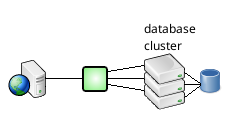
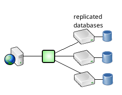
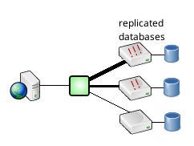

High Availability |
High Availability |  Contents | Already-Load Balanced Databases
Contents | Already-Load Balanced Databases 
Load Balancing and Failover With Replicated Databases or Database Clusters
In a database cluster or replication environment, SQL Relay can be configured to maintain a pool of connections to the various database nodes and distribute client sessions over the nodes. If an individual node fails, SQL Relay will attempt to reestablish connections to that node, while continuing to distribute client sessions over the remaining nodes.


In the configuration file, each connection tag defines a node to maintain connections to. In the following example, SQL Relay is configured to distribute over three Oracle nodes - ora1, ora2, and ora3
<?xml version="1.0"?>
<instances>
<instance id="example">
<connections>
<connection string="user=scott;password=tiger;oracle_sid=ora1"/>
<connection string="user=scott;password=tiger;oracle_sid=ora2"/>
<connection string="user=scott;password=tiger;oracle_sid=ora3"/>
</connections>
</instance>
</instances>
Any number of connection tags may be defined.
SQL Relay also supports disproportionate distribution of load. If some nodes can handle more traffic than others, then SQL Relay can be configured to send more traffic to the more capable nodes.

SQL Relay uses the connection tag's metric attribute to decide how many connections to open to each node.
<?xml version="1.0"?>
<instances>
<instance id="example">
<connections>
<connection string="user=scott;password=tiger;oracle_sid=ora1" metric="5"/>
<connection string="user=scott;password=tiger;oracle_sid=ora2" metric="15"/>
<connection string="user=scott;password=tiger;oracle_sid=ora3" metric="30"/>
</connections>
</instance>
</instances>
The metric attribute doesn't specify the number of connections to open to each node, but the higher the metric relative to the other metrics, the more connections to that node will be opened and maintained. For example, if the metric for the first node is twice as large as the metric for the second node, then SQL Relay will open twice as many connections to the first node as the second.
In the example above, 15 is 3 times 5, so 3 times as many connections will be opened to ora3 as to ora1. 30 is 6 times 5, so 6 times as many connections will be opened to ora3 as ora1. Since a total of 10 connections will be opened, 1 will be opened to ora1, 3 to ora2, and 6 to ora2.
High Availability | Contents | Already-Load Balanced Databases